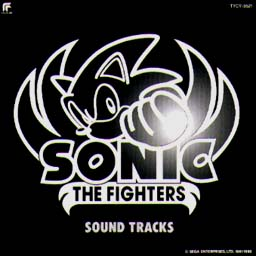
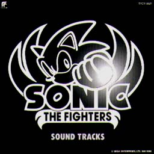

SONIC THE FIGHTERS
SOUND TRACKS


SONIC THE FIGHTERS
SOUND TRACKS

|
発売元：東芝EMI株式会社 |
|
未だに東京ディズニーランドのトゥモローランドでは稼働中のSTFのサントラ盤。 |
|
01. ADVERTISE 02. CHARACTER SELECT 03. GAME STRAT 04. SOUTH ISLAND 05. FLYING CARPET 06. AURORA ICEFIELD 07. MUSHROOM HILL 08. CANYON CRUISE 09. CASINO NIGHT 10. DYNAMITE PLANT 11. GIANT WING 12. CHAOS EMERALD 13. DEATH EGG'S EYE 14. DEATH EGG'S HANGAR 15. MISSION COMPLATE 16. SUPER SONIC 17. SONIC vs KNUCKLES 18. YOU ARE WINNER 19. NAME ENTRY 20. ENDING THEME 21. CONTINUE 22. GAME OVER -別バージョン- 23. CHARACTER SELECT -未使用曲- 24. SUNSET TOWN |
|
・次の作品を見てみたいっす!! ・関連CD＜国内編＞のページへ ・Music CDのページへ ・Sound Web Siteのトップページへ |